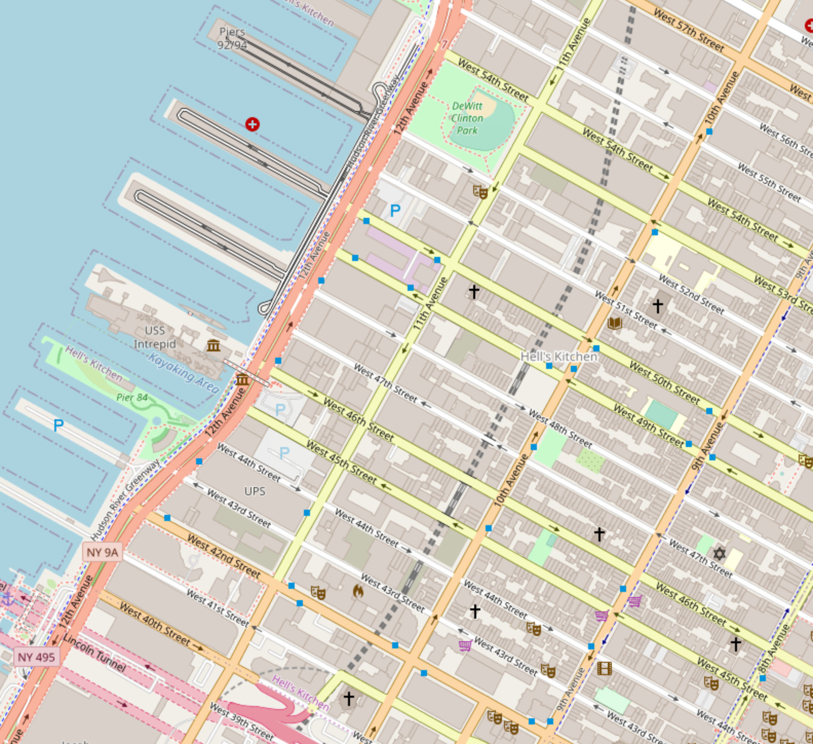

April 15th, 2020 - Derek Rodriguez
This is a blog post documenting an interesting data structure I implemented a couple years ago, which I'm now using as the backbone for a path-finding library which you will be able to incorporate into your own games. The system I implemented comes from this paper published a couple years ago by Dr. Aizawa and Dr. Tanaka. As far as I can tell, there is no open source library offering this data structure, so I'm creating an implementation myself and sharing it with the world. In the follow-up blogpost, I'll be showing how we can take this data structure and use it for input.
Let's say you're making a video game, and you want to fill it with NPCs who are
capable of getting from point A to point B without hard-coding every path that
very NPC has to travel. To save yourself some time, you'd like to have access
to a walkToPoint(Point destination) function when programming the behavior for
a given NPC. If the space between the NPC and the goal is empty, then the
obvious choice is for the NPC to just walk in a straight line towards the goal.
But what if this is a long journey, and there are buildings placed right along
that straight line which the NPC can't go through? We'll have to build a path
around the obstacles to get to the goal.
In order to build a path across the space, we can represent our space as an undirected cyclical graph, and use a graph search algorithm to build the path from A to B. Quadtrees are a very efficient way of representing a 2D space where regions of that space clearly fall into two categories. For our example, our game map would be classified into space where NPCs can walk, and space where NPCs can't walk.
To build our quadtree, we would take the entire space, and separate it into four equally sized cells. Each of those cells would have one of three values:
Now that the cells have been classified, we break each MIXED cell into four more cells for the second time and assign those cells their corresponding values. We repeat this process of dividing up cells until there are no MIXED cells left, only TAKEN and FREE. We can then quickly build paths from A to B through the centroids of each cell. The video below demonstrates this in action:
Each of these cells has an address. Since we produced these cells in fours, it makes the most sense to use a base-4 counting system for addressing. Base-4 is also very easy to translate to binary because 4 is a power of 2. This addressing scheme is convenient because it allows for us to query neighboring cells of any given cell and check their contents really quickly. It ends up working similar to street numbering systems like the one used in Upper Manhattan.  However, instead of using cardinal directions, we use 0, 1, 2, and 3 (the four digits of a base-4 system).. For a more thorough review of the implementation, I've open-sourced the Python implementation, which is accessible here and the paper, for which I've given the DOI link in case you have difficulty accessing the paper through IEEE.
In the coming months, I hope to get the C++ implementation ready for open source as well. However, this quadtree will be part of an AI subsystem offered alongside a much larger project, so it might be some time.